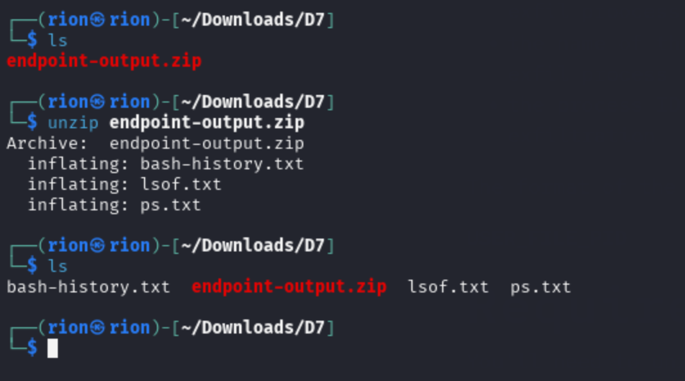
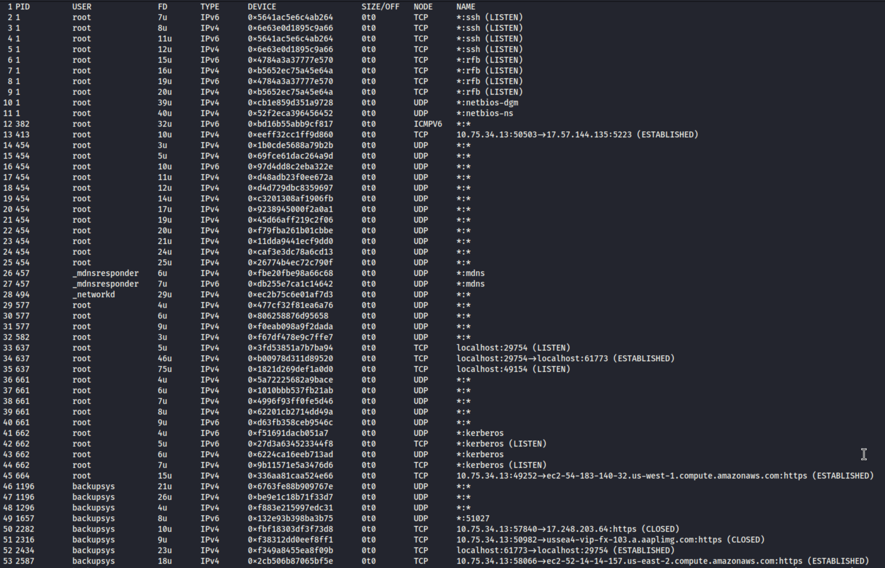
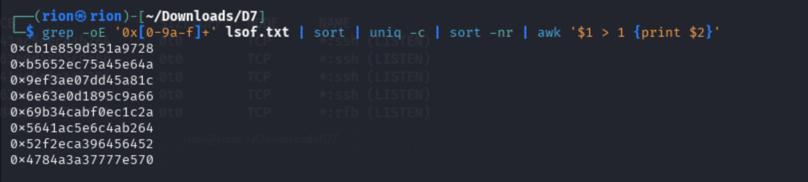
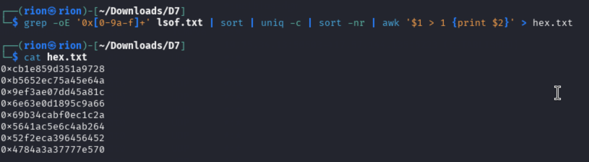
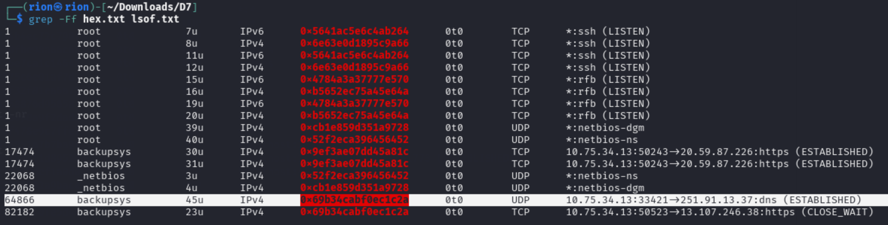
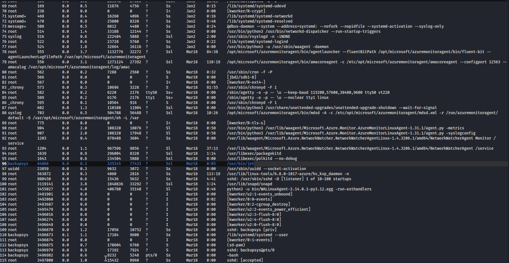
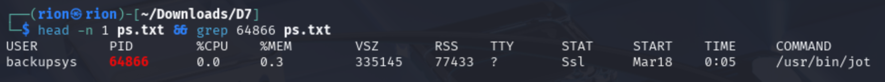
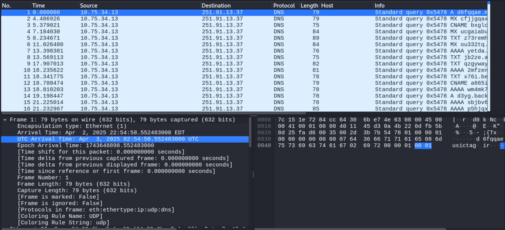
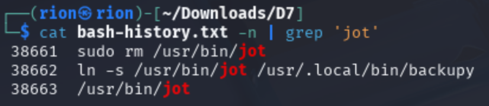

>_ What caused the data exfiltration in the first place?
In D5, we identified the backup server that is the source of the transfer, and the IP address that the threat actor is possibly sending data to. Now the question is, what software on the backup server is responsible for the exfiltration?
Luckily, InfoSec has identified this backup server as one that stores highly sensitive data, and have endpoint agents installed on the server that have been monitoring its activities. The other incident responders queried the data gathered about this host for the timeframe of the suspected exfiltration, and have given you a set of files that may shed some light on the situation. The data files you've been given contain the outputs of shell commands run directly on the endpoint. You'll be examining the outputs of the commands lsof, ps, and history.
Your task is to identify the OS process, user, and software that is performing the exfiltration, and where the software came from. Along the way, you may notice a sneaky tactic that the attacker used to attempt to conceal the software being used. Let what you found from the PCAP challenge lead you to the needle in the haystack!
You'll need to unzip the archive containing the data files, but you won't need any special software to read them. Any text file viewer and/or IDE will do just fine.
In this challenge, we are given a file called endpoint-output.zip. Download the zip folder and organize it:

Terminal — extracting endpoint-output.zip reveals lsof.txt, ps.txt, and bash-history.txt
With the 3 files lsof.txt, ps.txt and bash-history.txt, we will search for:
Let's first look at lsof.txt:

lsof.txt — full network file output | Click to enlarge
There is a lot of traffic. To make it digestible, let's print only processes where devices appear more than once:
| Argument | Description |
| grep -oE '0x[0-9a-f]+' lsof.txt | Extract all hexadecimal addresses from lsof.txt using extended regex |
| | sort | Sort the extracted hex values alphabetically |
| | uniq -c | Count occurrences of each unique hex value |
| | sort -nr | Sort counted results numerically in reverse (most to least frequent) |
| | awk '$1 > 1 {print $2}' | Print hex values that occur more than once |

Filtered output — devices with multiple process entries
Save this output to hex.txt:

hex.txt — list of repeated device addresses saved
Now use grep -Ff (Fixed String Matching, reading patterns from a file) to extract only the rows from lsof.txt that match these repeated devices:

lsof.txt — filtered to rows with repeated device addresses | Click to enlarge
Look at process ID 64866 in the NAME column — we can see an established DNS connection: 10.75.34.13:33421 → 251.91.134.37:dns. This is the Personalyz.io private IP address sending traffic to the adversary's public IP. Note the process ID.
Open ps.txt to review the process statuses on the compromised system:

ps.txt — process snapshot of the compromised system | Click to enlarge
Isolate PID 64866 with its header for context:

ps.txt — PID 64866 row: USER=backupsys, COMMAND=jot from /usr/bin/
The USER column shows backupsys and the COMMAND shows jot from /usr/bin/. But jot is a FreeBSD utility for printing numbers — suspicious for a process that's exfiltrating data.

ps.txt — detailed view confirming START date and process origin | Click to enlarge
Next, open bash-history.txt. With 57,909 lines, we need grep. Let's search for "jot" with line numbers:

bash-history.txt — grep for "jot" reveals the symlink chain
Here is what's happening at lines 38661–38663:
jot is NOT the executable that created the exfil process. The real executable is backupy.
In this challenge, we inspected 3 endpoint files to discover the process responsible for data exfiltration.
This tactic falls under TA0042 — Resource Development and TA0005 — Defense Evasion as symbolic links were created on benign software pointing to the malicious software installed on the system.
This technique falls under T1608 — Stage Capabilities and T1055 — Process Injection as Shadow Gopher installed malicious software and used a symbolic link to have the system execute it.
Shadow Gopher injected malicious software into the system and created a symbolic link to a benign process to execute the software for exfiltration undetected.
The following mitigation measures can be applied to this TTP. Click a link to view full details in the MITRE ATT&CK Framework.
| Mitigation | Description |
| M1040 — Behavior Prevention on Endpoint | Use of technologies and strategies to detect and block potentially malicious activities by analyzing the behavior of processes, files, API calls and other endpoint events. |
| M1026 — Privileged Account Management | Implementing policies, controls and tools to securely manage privileged accounts. |
The following detection data sources are applicable to this TTP. Click a link to view full details in the MITRE ATT&CK Framework.
| Data Source | Description |
| DS0022 — File Metadata | Monitor for contextual data about a file, including name, user/owner, and permissions. |
| DS0022 — File Modification | Monitor for changes made to files that may evade process-based defenses and elevate privileges. |
| DS0011 — Module Load | Monitor DLL/PE files, creation of binary files and loading DLLs into processes. |
| DS0009 — OS API Execution | Monitor Windows API and Linux syscalls. |
| DS0009 — Process Access | Monitor for processes being accessed that may indicate code injection attempts. |
| DS0009 — Process Metadata | Monitor for process memory inconsistencies. |
| DS0009 — Process Modification | Monitor for changes made to processes that may indicate code injection. |
{kind=link}
{kind=link}
{kind=link}